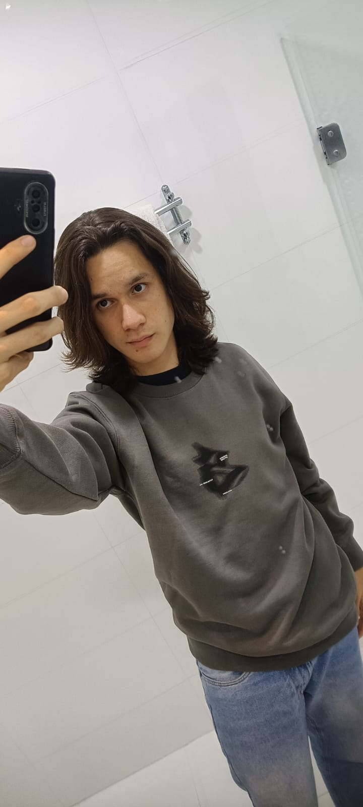
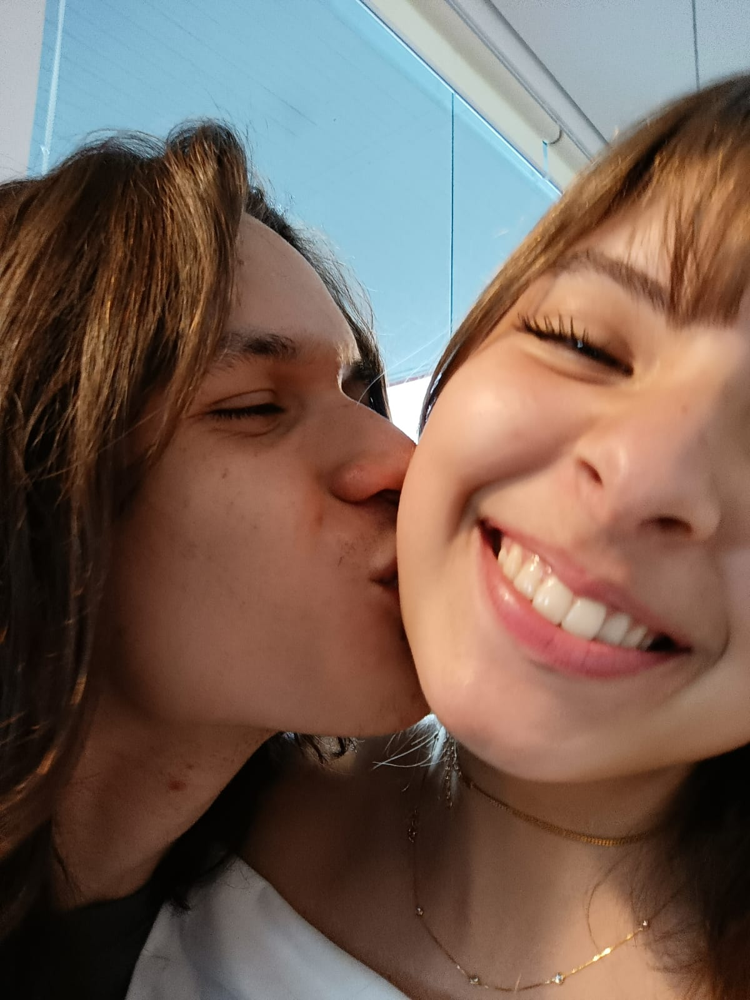
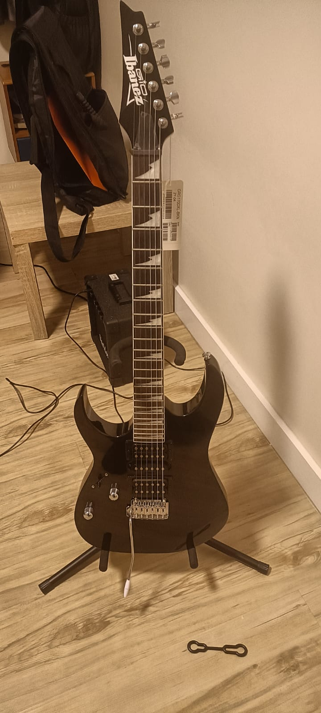

Sobre Mim
Meu Nome é João Vitor Lima Schulz, nasci dia 21/02/2008, atualmente tenho 17 anos e estou cursando o curso de desenvolviemnto de sistemas no Senai, nasci em São Paulo capital e em outubro de 2020 me mudei para Jaraguá Do Sul, Sc. Não tenho nenhuma experiencia profissional de trabalho ainda. E sou torcedor fanatico do atletico mineiro, minha banda favorita é the ofsspring


Meus hobbies e interesses

Minhas habilidades
- Programação
- Consigo programar em diversas linguagens distintas
- IOT
- Tenho facilidades com iot e a montagem de equipamentos
- Tocar punk
- toco principalmente punk na guitarra (the ofsspring principalmente)
Minha programação semanal
| Dia da semana | Atividade principal |
|---|---|
| Segunda | Aula de musica 2 |
| terça | Senai |
| Quarta | Senai |
Contato
Você pode entrar em contato em:Meu instagram